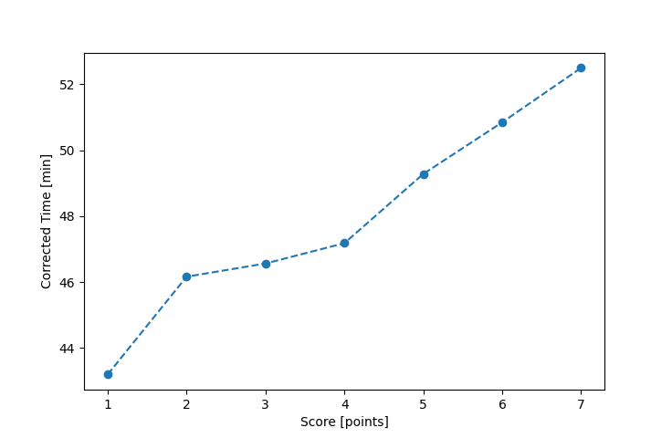

| Wind: | ? (BFT) |
|---|---|
| RC: | Marja_J, Jim_M |
| Date: | September 08, 2024 |
| Notes: | M2 |
| Rank / Score | Name | Boat | Input Time [mm:ss] | Input Offset [mm:ss] | Race Time [mm:ss] | Race Time [s] | Handicap | Corrected Time [s] | Corrected Time [mm:ss] |
|---|---|---|---|---|---|---|---|---|---|
| 1.0 | Barry_O | HLR14 | 53:57 | 05:00 | 48:57 | 2937 | 1.13300 | 2592 | 43:12 |
| 2.0 | Heather_B | SF | 52:33 | 05:00 | 47:33 | 2853 | 1.03000 | 2770 | 46:10 |
| 3.0 | David_Bu | SF | 52:58 | 05:00 | 47:58 | 2878 | 1.03000 | 2794 | 46:34 |
| 4.0 | Ryan_C | SF | 53:36 | 05:00 | 48:36 | 2916 | 1.03000 | 2831 | 47:11 |
| 5.0 | Matthew_J | SF | 55:46 | 05:00 | 50:46 | 3046 | 1.03000 | 2957 | 49:17 |
| 6.0 | Matt_L | F5 | 54:53 | 05:00 | 49:53 | 2993 | 0.98100 | 3051 | 50:51 |
| 7.0 | Ian_O | US-1 | 52:34 | 05:00 | 47:34 | 2854 | 0.90600 | 3150 | 52:30 |
| 8.0 | Jim_H | LASE | DNF | -- | -- | -- | -- | -- | DNF |

Application Notes:
All race results are unofficial
View source code at https://github.com/cessnao3/portsmouthracecalc/